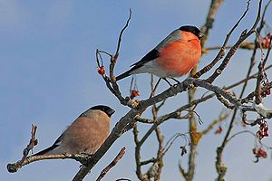
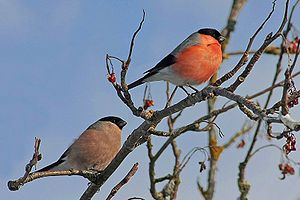

| Bullfinch | |
|---|---|
|  | |
| A pair in Germany (male is brighter red) | |
| Conservation status | |
| Binomial name | |
| Pyrrhula pyrrhula (Linnaeus, 1758) |
| Bullfinch | |
|---|---|
|  | |
| A pair in Germany (male is brighter red) | |
| Conservation status | |
| Binomial name | |
| Pyrrhula pyrrhula (Linnaeus, 1758) |
The Bullfinch, Common Bullfinch or Eurasian Bullfinch, Pyrrhula pyrrhula, is a small passerine bird in the finch family Fringillidae. In Anglophone Europe it is known simply as Bullfinch, as it is the original bird to bear the name bullfinch.
This bird breeds across Europe and temperate Asia. It is mainly resident, but many northern birds migrate further south in the winter.
Mixed woodland with some conifers is favoured for breeding, including parkland and gardens. It builds its nest in a bush, (preferably more than 4 metres tall and wide),mature stands of scrub, or tree, laying 4-7 eggs. The food is mainly seeds and buds of fruit trees, which can make it a pest in orchards. Ash and hawthorn are favoured in autumn and early winter 2. If wild bird cover is planted for it, Kale, Quinoa and Millet are preferred, next to tall hedges or woodland.
This species does not form large flocks outside the breeding season, and is usually seen as a pair or family group.
The Bullfinch is a bulky bull-headed bird. The upper parts are grey; the flight feathers and short thick bill are black; as are the cap and face in adults (they are greyish-brown in juveniles), and the white rump and wing bars are striking in flight. The adult male has red underparts, but females and young birds have grey-buff underparts. The pleasant song of this unobtrusive bird contains fluted whistles.
The Azores Bullfinch previously regarded as a subspecies of Eurasian Bullfinch, is today recognized as a distinct species.
The European Bullfinch is peculiar among Passeriformes for having spermatozoa with a rounded head and a blunt acrosome (Birkhead et al., 2006).

{kind=link}